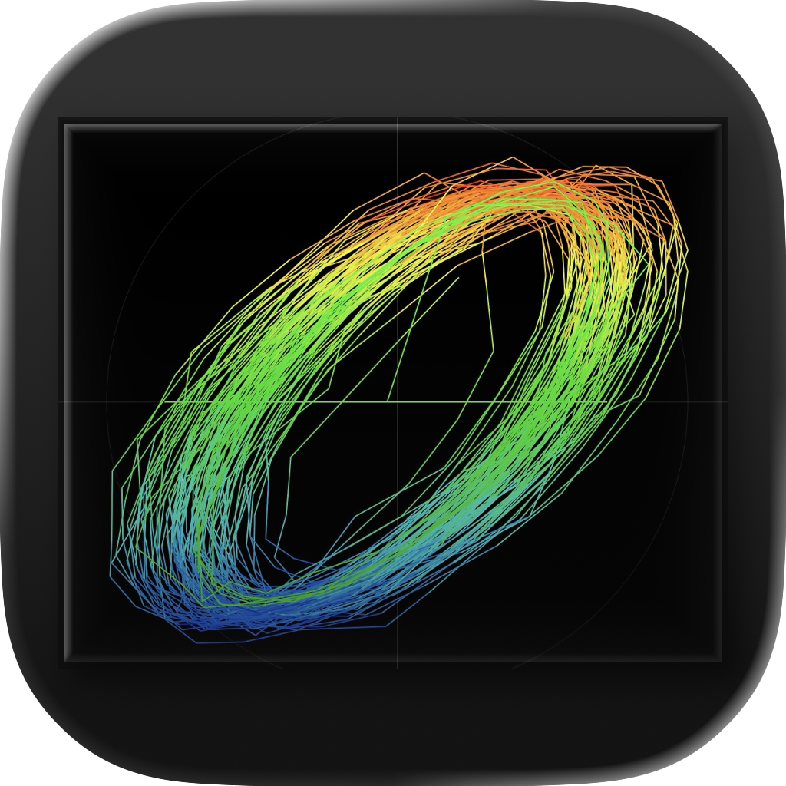

Play
Explore guitar, strings, brass, woodwinds, synths, speakers, and effects.

Hilbert3D Email supportReal-time audio for iPhone + iPad
Hilbert3D turns the sound around you into a luminous phase portrait, revealing pitch, motion, and harmonic character as they happen.
Private by design. Audio never leaves your device.
A DIFFERENT VIEW OF AUDIO
Hilbert3D pairs the microphone signal with its Hilbert transform. Real and quadrature components become X and Y, drawing a closed, living path instead of a line moving through time.
A second transform adds color and energy. Stable tones form clean orbits; harmonics, breath, distortion, and noise reveal their own more intricate geometry.
PHOSPHOR WITH MEMORY
A persistent Metal-rendered trace holds each movement just long enough to reveal it. Cycle-synchronous averaging steadies sustained pitches, while adaptive brightness and automatic gain keep the signal legible from a whisper to an instrument.
PITCH, IN CONTEXT
Read frequency, note, and cents while seeing timbre change around the same pitch.
Hear the pitch. See the character.
MAKE A SOUND
Explore guitar, strings, brass, woodwinds, synths, speakers, and effects.
Watch breath, vibrato, pitch, and resonance reshape the trace in real time.
Make phase, analytic signals, harmonics, and intonation visible and immediate.
PRIVATE BY DESIGN
Microphone audio is processed live on your device. Hilbert3D does not record it, save it, upload it, or send it anywhere.
SwiftUI • AVAudioEngine • Accelerate/vDSP • Metal
HILBERT3D
Make a sound and watch that structure appear.